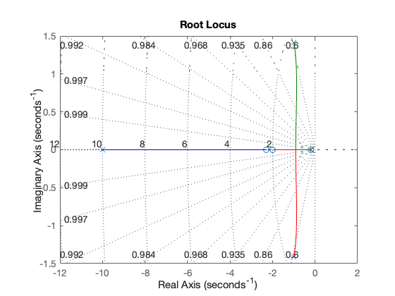
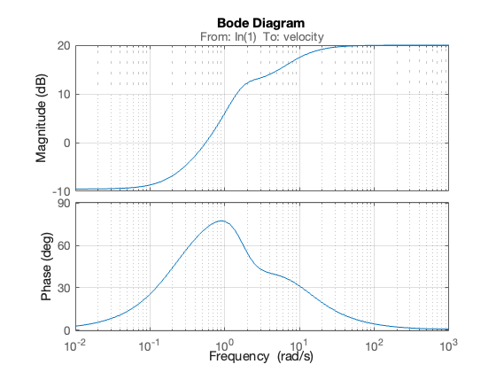
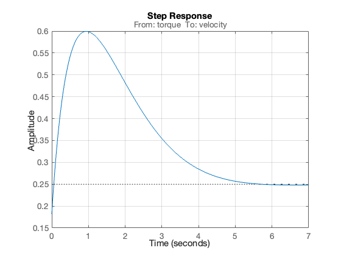
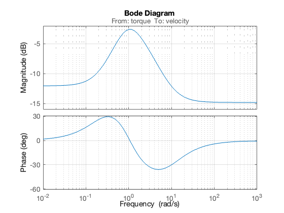
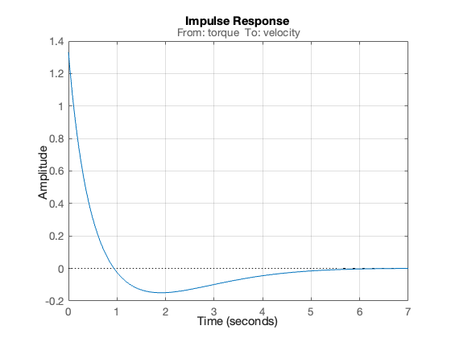
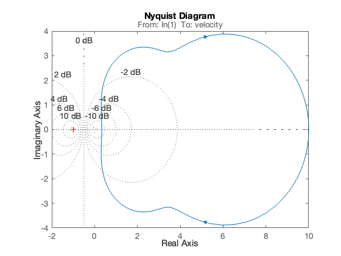
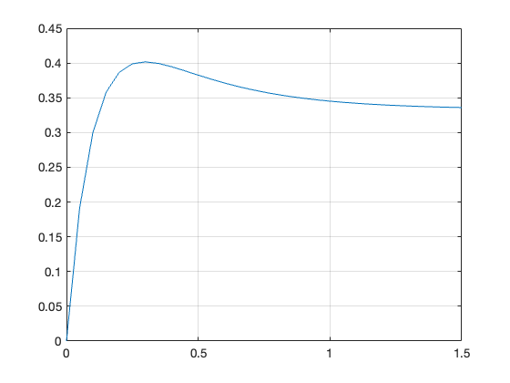
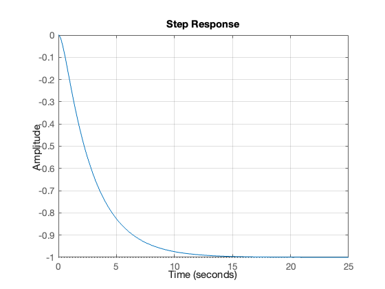

% Initialize MATLAB
clearvars
cd ../matlab
pwd
format compact
ans =
'/Users/eechris/code/src/github.com/cpjobling/eg-150-textbook/laplace_transform/matlab'
b = [1, 2, 3]; % s^2 + 2s + 3
a = [1, 4, 5, 6]; % s^3 + 4s^2 + 5s + 6
q = [1, 2, 0];
r = [1, 0, 2, 0, 1];
syms s
G(s) = (s^2 + 2*s + 3)/(s^3 + 4*s^2 + 5*s + 6)
G(s) =
(s^2 + 2*s + 3)/(s^3 + 4*s^2 + 5*s + 6)
[Num,Den] = numden(G(s))
Num =
s^2 + 2*s + 3
Den =
s^3 + 4*s^2 + 5*s + 6
nNum = sym2poly(Num), nDen = sym2poly(Den)
nNum =
1 2 3
nDen =
1 4 5 6
poly2sym(nNum,s)
ans =
s^2 + 2*s + 3
z = [-1; -3];
p = [0; -2; -4];
K = 1;
G = zpk(z,p,K)
G =
(s+1) (s+3)
-------------
s (s+2) (s+4)
Continuous-time zero/pole/gain model.
[num,den]=tfdata(G,'v')
num =
0 1 4 3
den =
1 6 8 0
G2=tf(num,den)
G2 =
s^2 + 4 s + 3
-----------------
s^3 + 6 s^2 + 8 s
Continuous-time transfer function.
G2 = tf(G)
G2 =
s^2 + 4 s + 3
-----------------
s^3 + 6 s^2 + 8 s
Continuous-time transfer function.
[zeros,poles,gain]=zpkdata(G2,'v')
zeros =
-3
-1
poles =
0
-4
-2
gain =
1
G2=tf(num,den)
G2 =
s^2 + 4 s + 3
-----------------
s^3 + 6 s^2 + 8 s
Continuous-time transfer function.
[zeros,poles,gain]=zpkdata(G2,'v')
zeros =
-3
-1
poles =
0
-4
-2
gain =
1
set(G,'InputName','Voltage','OutputName','Angular Position')
G3=zpk(z,p,K,'InputName','Armature Voltage (V)',...
'OutputName','Load Shaft Position (rad)',...
'notes','An armature voltage controlled servomechanism')
G3 =
From input "Armature Voltage (V)" to output "Load Shaft Position (rad)":
(s+1) (s+3)
-------------
s (s+2) (s+4)
Continuous-time zero/pole/gain model.
get(G3,'notes')
ans =
1x1 cell array
{'An armature voltage controlled servomechanism'}
in=G3.InputName, out=G3.OutputName
in =
1x1 cell array
{'Armature Voltage (V)'}
out =
1x1 cell array
{'Load Shaft Position (rad)'}
get(G3)
Z: {[2x1 double]}
P: {[3x1 double]}
K: 1
DisplayFormat: 'roots'
Variable: 's'
IODelay: 0
InputDelay: 0
OutputDelay: 0
InputName: {'Armature Voltage (V)'}
InputUnit: {''}
InputGroup: [1x1 struct]
OutputName: {'Load Shaft Position (rad)'}
OutputUnit: {''}
OutputGroup: [1x1 struct]
Notes: {'An armature voltage controlled servomechanism'}
UserData: []
Name: ''
Ts: 0
TimeUnit: 'seconds'
SamplingGrid: [1x1 struct]
G4 = zpk(G2)
G4 =
(s+3) (s+1)
-------------
s (s+4) (s+2)
Continuous-time zero/pole/gain model.
G5 = tf(G)
G5 =
From input "Voltage" to output "Angular Position":
s^2 + 4 s + 3
-----------------
s^3 + 6 s^2 + 8 s
Continuous-time transfer function.
G1=tf([1 1],[1 3]);
G2=tf(10,conv([1 0],[1 2])); % conv is polynomial multiplication
Gs=G1*G2 % series connection of two LTI objects
Gs =
10 s + 10
-----------------
s^3 + 5 s^2 + 6 s
Continuous-time transfer function.
[zeros,poles,K]=zpkdata(Gs,'v')
zeros =
-1
poles =
0
-3.0000
-2.0000
K =
10
Gp = G1 + G2
Gp =
s^3 + 3 s^2 + 12 s + 30
-----------------------
s^3 + 5 s^2 + 6 s
Continuous-time transfer function.
G = tf([2 5 1],[1 2 3],'inputname','torque',...
'outputname','velocity');
H = zpk(-2,-10,5);
Gc = feedback(G,H) % negative feedback assumed
Gc =
From input "torque" to output "velocity":
0.18182 (s+0.2192) (s+2.281) (s+10)
-----------------------------------
(s+3.419) (s^2 + 1.763s + 1.064)
Continuous-time zero/pole/gain model.
rlocus(G*H),sgrid

bode(G*H),grid

step(Gc),grid

bode(Gc),grid

impulse(Gc),grid

nyquist(G*H),grid

k = 5; z = [-2]; p = [0; -3; -10]; % zero-pole-gain form
C = zpk(z,p,k);
[num,den] = tfdata(C,'v')
%
% (Note that the leading terms in num are zero).
num =
0 0 5 10
den =
1 13 30 0
[r,p,k] = residue(num,den)
r =
-0.5714
0.2381
0.3333
p =
-10
-3
0
k =
[]
newC = tf([5, 10],[1, 13, 30])
step(newC),grid % provides $u_0(t)$
newC =
5 s + 10
---------------
s^2 + 13 s + 30
Continuous-time transfer function.
t = 0:.05:1.5; % time vector
c = 0.3333 + 0.2381 * exp(-3*t) - 0.5714 * exp(-10*t);
plot(t,c),grid

G = tf([-1],[1 3 1])
G =
-1
-------------
s^2 + 3 s + 1
Continuous-time transfer function.
step(G),grid

open example_15_1
bode(G),grid